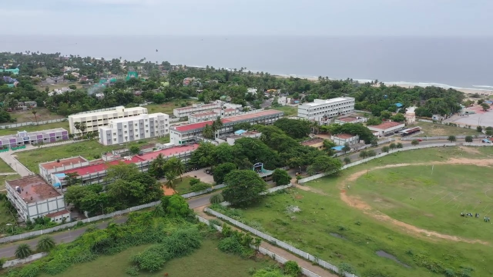

Periyar Arts College (formerly Periyar Government Arts College) in Cuddalore is a public higher education institution established in 1964. Located in Devanampattinam near Silver Beach, the fully funded government college offers various undergraduate, postgraduate, and doctoral programs affiliated with Thiruvalluvar University.